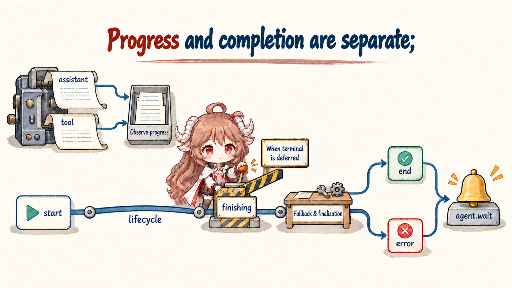
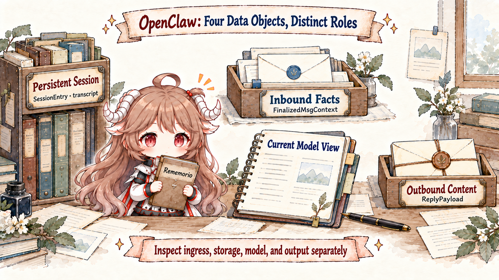

We will follow one task throughout the article. A user writes in Telegram: “Check the failing project tests, fix them, and send the result back here.” The sentence is short. The runtime work is not. OpenClaw must decide whether the event may start an agent turn, which durable session owns it, whether that session already has a run in flight, what the model is allowed to see and do, and how text or media should return to Telegram.
Collapsing all of that into “receive message → call model → send answer” makes three common failures impossible to explain. Why can the same human share context across some chat surfaces but not others? Why can a caller still be waiting after assistant text has appeared? If a tool changed a file and final delivery failed, should the system replay the input, resume a run, or only retry delivery?
This opening chapter therefore stays on one inbound turn. It connects the main call path, the state owners, and the terminal signal. Later chapters zoom into each boundary rather than repeating a shallow overview of every feature.
Reading contract.By the end, you should be able to explain why a provider event first becomes normalized context; why sessionKey constrains behavior before model selection; how model and tools hand control back and forth; why the assistant, tool, and lifecycle streams are not interchangeable; and why ReplyPayload is an outbound value rather than the state of the run.
Evidence boundary.This article pins OpenClaw at commit e6b42643e7aae229d115477596b33c36c38f7101. Names and call order come from that snapshot; product-level contracts are checked against the official Agent Loop, Messages, and Session docs. Source can establish structure and ownership. It cannot, by itself, prove latency, reliability, or security properties in every deployment.
1. How a message acquires a session and execution order
1.1 A turn is larger than a model request
Our user sent one message, but the agent may contact the model four times: once to decide to read the test log, again to search the relevant code, again after editing to run the tests, and finally to explain the verified result. A turn is not one model request. It is the lifecycle from inbound admission through a run-level terminal state and outbound handling.
This distinction puts tool execution in the right place. A tool is not an optional postscript after the “real” model work. Its result becomes evidence for the next model decision. The turn remains alive while the runtime can still produce another tool call, request interaction, compact and retry, or enter a recoverable branch.
| Object | What it owns | What it does not own |
|---|---|---|
| Message | A channel event and its text, media, sender, and thread facts. | It does not inherently choose a session or start an agent. |
| Model request | One runtime view sent to one provider/model candidate. | It is not the whole turn and does not own delivery. |
| Agent turn | Admission, session, queues, model, tools, events, termination, and reply handling. | It need not contain exactly one request or only text output. |
| Session | Durable identity, history ownership, and a concurrency boundary across turns. | It is neither the active Promise nor the final reply. |
1.2 The channel kernel normalizes the event first
Telegram, Discord, Slack, and WebChat deliver very different raw objects. OpenClaw keeps those provider details at the plugin and adapter boundary. The shared runChannelTurn first asks the adapter to ingest a raw event into normalized input, then classifies whether that event may begin an agent turn.
Receiving an event is therefore not the same thing as running an agent. A channel-owned interaction, an observe-only event, or a rejected admission can end before any model work. The kernel even has a policy-controlled history path for dropped events. Admission is itself a fact worth recording; the absence of a reply is not enough to tell an operator what happened.
const input = await params.adapter.ingest(params.raw);
const eventClass = (await params.adapter.classify?.(input)) ?? DEFAULT_EVENT_CLASS;
if (!eventClass.canStartAgentTurn) {
return { admission: { kind: "handled", reason: `event:${eventClass.kind}` }, dispatched: false };
}The transferable rule is simple: translate provider-owned events into product-owned inputs before applying shared admission and lifecycle policy. Otherwise every channel reimplements deduplication, audit, history, and error semantics—and every fix becomes a partial fix.
1.3 Routing produces a sessionKey before model selection
Once admitted, the message needs an owner. OpenClaw routing produces more than an agent name. It contributes to a stable sessionKey that can incorporate channel, account, peer, thread, binding, and agent configuration. Messages with different keys belong to different state domains even if both later use the same provider and model.
That is why model selection is not the earliest important decision. A provider/model candidate can fail over during a run. Session identity must already exist so queues, persistent state, and the reply operation have something stable to own. The signature and setup of runReplyAgent carry sessionEntry, sessionStore, sessionKey, queueKey, and resolved queue policy alongside model information.
Debugging shortcut.When “the same user” appears to have lost context, compare route resolution and sessionKey before changing prompts or memory. Many apparent context failures were already split into separate sessions upstream of the model.
1.4 Queues protect the order of transcript writes
Suppose the user sends “fix the tests” and immediately follows with “do not edit generated files.” If both turns read the old transcript and write independently, the second constraint can land after the first tool action—or two runs can mutate the same workspace concurrently. OpenClaw uses both a session lane and a global lane to keep these concerns separate.
In runEmbeddedAgentInternal, a lane controller exposes enqueueSession and enqueueGlobal. The code enters the session lane, waits for prior deferred transcript maintenance for that session, and only then enters the global concurrency gate.
- The session lane protects ordered reads and writes within one state domain.
- The global lane limits expensive concurrent runs across the process without turning one busy session into a lock on every other session.
Queue modes therefore change semantics, not just performance. Steering, following up, interrupting, and collecting are different answers to one ownership question: may a new message join the active run, must it become the next author of the transcript, or should it replace the run? Part three will trace those modes in detail.
2. How the request enters the model–tool loop
2.1 dispatchReplyFromConfig is a staged, short-circuiting pipeline
With route and session prepared, the request reaches dispatchReplyFromConfig. The name sounds like a thin configuration switch. The inner function instead advances through request gathering, delivery preparation, operation context, operation, route, execution, finalization, and audit.
// Stage-order sketch; per-stage complete branches and runtime scopes omitted
const gathered = await gatherDispatchRequest(params, messageAuditTerminal, allowActiveQueueResolution);
if (gathered.status === "complete") return gathered.result;
const delivery = await prepareDispatchDelivery(gathered.state);
const context = await prepareDispatchOperationContext(delivery.state);
const operation = await prepareDispatchOperation(context.state);
const route = await chooseDispatchRoute(operation.state);
const execution = await prepareDispatchExecution(route.state);
const executed = await executeDispatch(execution.state);
return (await finalizeDispatchAndAudit(executed.state)).result;The repeated status === "complete" checks matter. A command handler, policy decision, or no-model response can terminate in its own stage without pretending an embedded agent succeeded. On error, the function commits or releases its inbound dedupe claim according to replay safety, records the dispatch and processing outcome, and returns the runtime to an idle state. “Can we retry?” is already being shaped by possible side effects.
2.2 runReplyAgent connects channel progress to the runtime
Branches that require a model eventually enter runReplyAgent. This layer knows about typing indicators, block streaming, reply threading, partial replies, session state, queue policy, model resolution, and tool progress. It is not merely a model wrapper. It turns internal run events into progress and payloads that a channel can consume.
The same seam checks duplicate restart-recovery sources before model execution. It reloads the durable session entry and compares the source turn id with a persisted claim. A duplicate returns without repeating work; the claim proves that a run adopted the input, not that the run completed. Retirement is attempted only when conditions including a non-running session permit it. This is not the only deduplication boundary: dispatch already filters durable duplicates before plugin hooks, and this layer reloads and rechecks at model admission to prevent repeated tool effects.
Only now does our test-fixing request have permission to execute. Everything before it established ownership, ordering, delivery, and replay constraints.
2.3 runEmbeddedAgentInternal executes the model–tool loop
runEmbeddedAgent fills in configuration, lifecycle generation, and plugin generation before calling runEmbeddedAgentInternal. The inner entry normalizes session-target identity, fills a missing sessionKey, checks run admission, and enters the session/global lanes. It is no longer accurately described as a plugin wrapper that merely strips host-only fields.
The entry no longer guarantees that model execution stays in the same process. After admission and concurrency checks, eligible requests may first dispatch to a CLI backend; the remaining path resolves workspace, model candidates, and harness runtime. The loop below focuses on the built-in harness, which still assembles bootstrap files, system prompt, skills, governed tools, and transcript before an attempt. Parts four through six separate those inputs and their policy owners.
while (!terminal) {
const assistant = await model.respond(runtimeView);
emit("assistant", assistant);
if (!assistant.toolCalls.length) break;
for (const call of assistant.toolCalls) {
emit("tool", { phase: "start", call });
const result = await governedToolRunner.execute(call);
emit("tool", { phase: "end", call, result });
runtimeView.append(result);
}
}This is pseudocode, not a pasted implementation; it omits tool concurrency policy, retries, and interruption and does not assert that actual tools always execute serially. Its ownership is the important part: the model proposes structured tool calls; the governed runner performs real actions; results re-enter the runtime view for another model decision. That is why the model–tool arrows stay inside the built-in runtime owned by runEmbeddedAgentInternal, not around channel ingress or ReplyPayload.
3. How a run is observed, stored, and recovered
3.1 Three event streams report content, tools, and termination

A caller cannot wait until the final answer to observe a long run. OpenClaw subscription handlers separate assistant, tool, and lifecycle streams. They may occur close together, but they answer different questions.
| Stream | Fact represented | Typical consumer | Why it is not a run terminal |
|---|---|---|---|
assistant | Text and message content the model is producing. | Streaming UI, partial delivery, transcript assembly. | Text can be followed by a tool call. |
tool | A tool call started, progressed, or ended and produced a result. | Progress, audit, media, and side-effect tracking. | Another tool or model response may follow. |
lifecycle | Run start, attempt finishing, and final end/error lifecycle states. | agent.wait, registries, recovery, terminal delivery. | Start and finishing remain nonterminal; final end/error provide termination evidence. |
handleAgentStart emits a lifecycle start. handleAgentEnd cannot simply check whether the last assistant message contains text. It also considers deterministic side effects, message-tool delivery evidence, accepted session spawns, cron creation, incomplete tool-use turns, and replay validity before deriving a terminal liveness state.
The figure focuses on the deferred terminal path. An attempt emits finishing; the outer owner retains its error and terminal metadata and emits end or error only after fallback and post-turn work settle. The terminal coordinator does not treat finishing as completion. Otherwise, the first failed candidate could appear to end the run while another candidate is still executing.
agent.wait reads Gateway run records and may also return a queued pending state or a wait timeout. A wait timeout does not prove that background execution stopped. Nor does final execution status establish successful channel delivery: callers should inspect terminalDelivery, terminalReceipt, and terminalReply as well. Visible content, completed execution, and delivered output are separate facts.
3.2 Four records serve ingress, storage, the model, and egress

By this point it is tempting to call everything “context.” The source exposes several distinct surfaces. FinalizedMsgContext carries normalized inbound facts. SessionEntry and transcript data live in durable session storage. The embedded agent constructs a temporary runtime view for this attempt. ReplyPayload describes channel-agnostic outbound content.
ReplyPayload can hold text, fallback text, media, attachments, presentation, and delivery preferences. It does not own the session and should not become the only recovery record. SessionEntry, in contrast, carries durable identity and recovery-related state such as session id, update time, restart recovery fields, and plugin extensions.
This yields a practical diagnostic order:
- Wrong inbound content: inspect normalized
FinalizedMsgContext. - Mixed history or reordering: inspect
sessionKey, the session lane, and durable session/transcript state. - A missing instruction in the model view: inspect runtime assembly and compaction.
- A correct model answer that never reached the channel: inspect
ReplyPayload, delivery adaptation, and audit.
These failures look similar from a chat window, but they belong to different owners. Prompt changes cannot repair routing, and transcript rewrites cannot repair provider delivery.
3.3 Side effects determine whether a failure can be retried
Return to the test-fixing task. The tool has edited a file, then the model provider times out. Replaying from the original message may edit the file twice. Declaring a clean failure leaves a real side effect unowned. OpenClaw tracks replay validity, delivery evidence, source claims, lifecycle generations, and terminal states at different layers to answer whether the original input remains safe to execute.
- Ingest/drop/handled: no agent began, so this is not a model failure.
- Command or policy short circuit: dispatch already has a complete result; no embedded run exists.
- Model or tool error: failover or abandonment depends on visible output and possible side effects.
- Interrupted tool-use turn: earlier assistant text does not make an unfinished tool chain a successful end.
- Duplicate recovery source: durable records show that a run adopted the source or that a terminal record exists, so duplicate execution is skipped; the claim is retired only when terminal cleanup conditions permit it.
A reliable agent runtime does not merely “have retries.” It can say who has evidence that a retry is safe. Process-local Promise rejection is not enough once external effects may have happened.
4. From the main path into the remaining chapters
4.1 Why the next seven chapters follow this order

This chapter established coordinates rather than exhausting every subsystem. The remaining ownership breaks become seven focused readings:
- Gateway: why it is a control plane rather than merely a WebSocket server.
- Routing and sessions: how bindings, peers, threads,
sessionKey, queues, and transcripts define ownership. - Context and memory: how workspace, bootstrap, system prompt, history, compaction, and memory stay separate.
- Capability assembly: where tools, skills, plugins, and hooks enter the runtime.
- Security boundary: how tool policy, sandbox, elevated execution, approvals, and channel identity constrain side effects.
- Multi-agent: how session tools, subagents, and ACP create new run owners and return results.
- Always-on recovery: how heartbeat, cron, durable tasks, and restart recovery extend a turn beyond one process lifetime.
The order moves from “how one run completes” to “how a long-lived system stays coherent.” Starting with cron or subagents would make a new session look like an ordinary function call. Missing the event and tool boundaries would make it impossible to decide what restart recovery should actually recover.
4.2 Five rules that travel beyond OpenClaw
- Normalize first, apply shared admission second.Channel plugins own provider differences; the core owns turn lifecycle.
- Establish state identity before selecting execution resources.Session and queue ownership usually constrain correctness earlier than provider/model choice.
- The model proposes; the runtime acts.Tool calls, side effects, and tool results require explicit seams.
- Content events are not terminal events.Assistant, tool, and lifecycle streams serve presentation, execution observation, and completion.
- Replay safety follows evidence of side effects.Once actions may have happened, use durable claims and terminal evidence instead of unconditional retries.
With those rules in hand, part two can pull the camera back from one turn to the Gateway. “Control plane” will then describe concrete protocol ownership—who may observe, configure, start, wait for, and recover these runs—rather than an architecture label pasted onto a server.
Source and documentation index
- Channel turn kernel: normalization, admission, and dispatch lifecycle.
- dispatch-from-config.ts: staged reply dispatch and error closure.
- agent-runner-run.ts: the seam from channel behavior to the embedded agent.
- run-orchestrator.ts: session/global lanes and runtime assembly.
- Lifecycle handlers: run start/end/error and terminal classification.
- Agent Loop, Messages, and Session: official conceptual contracts.